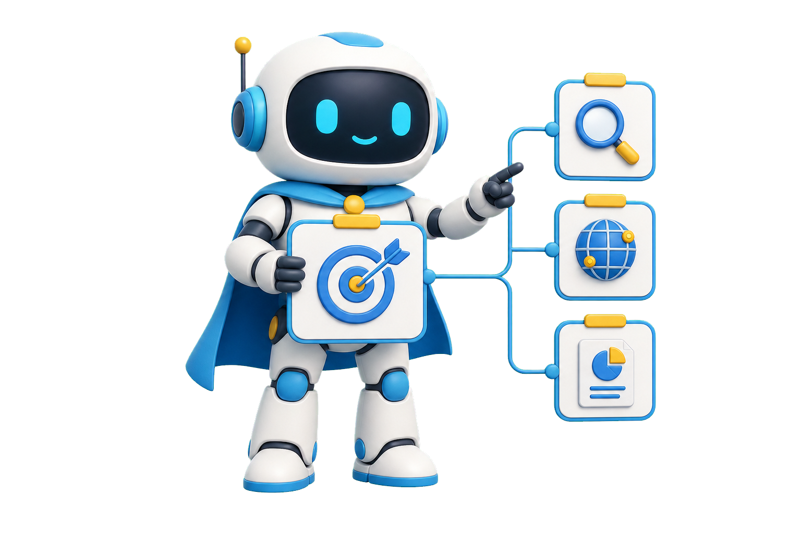

一个 Agent 什么时候不够用


一个 Agent什么时候不够用
一个 Agent 什么时候不够用
Anthropic 的多 Agent 边界

Anthropic Anthropic 的多 Agent 边界
Anthropic 的多 Agent 边界
Anthropic 的多 Agent 边界
90.2% 是内部研究评测

90.2% 是内部研究评测
单 Agent / 多 Agent 决策树

单 Agent / 多Agent 决策树
高价值内容先收藏

先收藏留下单 Agent / 多 Agent 决策树先适配，再并行

第 2 章
先过适配门
先判断能不能拆

研究天然有多条路径
研究天然有多条路径
子 Agent 压缩高信号
子 Agent 压缩高信号
共享状态重，不适合拆
≠
共享状态重，不适合拆
多 Agent 约 15 倍 token

多 Agent 约 15 倍 token
只为高价值任务扩张


只为高价值任务扩张
三个适配门

三个适配门
1.路径必须独立
2.共享状态越重越谨慎
3.价值覆盖成本
1.路径必须独立
2.共享状态越重越谨慎
3.价值覆盖成本
1.路径必须独立
2.共享状态越重越谨慎
3.价值覆盖成本
第 3 章
写好委派契约
主 Agent 负责拆分


目标与输出要具体
目标与输出要具体
指定工具和原始来源

指定工具和原始来源
指定工具和原始来源
写清不要重复什么
写清不要重复什么
委派五要素
委派五要素

两轮收敛策略

≠

两轮收敛策略
回收证据和未知项
回收证据和未知项
1.目标与输出明确
2.工具来源边界齐全
3.不只回收结论
1.目标与输出明确
2.工具来源边界齐全
3.不只回收结论
1.目标与输出明确
2.工具来源边界齐全
3.不只回收结论
第 4 章
按任务分配算力
按复杂度分档

简单事实：1 个 Agent

≠

简单事实：1 个 Agent
比较任务：2 到 4 个
比较任务：2 到 4 个
复杂研究：可超 10 个
复杂研究：可超 10 个
Agent 内也能并行工具
Agent 内也能并行工具
Agent 内也能并行工具
复杂查询最多快 90%
复杂查询最多快 90%

轻量 / 比较 / 深挖
轻量 / 比较 / 深挖
1.复杂度决定力度
2.收益来自等待重叠
3.边际收益下降就停
1.复杂度决定力度
2.收益来自等待重叠
3.边际收益下降就停
1.复杂度决定力度
2.收益来自等待重叠
3.边际收益下降就停
第 5 章
用结果和过程评估
评估动态路径

先看事实与引用
先看事实与引用


再看拆分与工具效率
再看拆分与工具效率
人工评审质量信号

人工评审质量信号
别只看最终分数

别只看最终分数
结果标准与过程护栏分开

结果标准与过程护栏分开
先做十题真实基线
先做十题真实基线
1.评事实引用覆盖
2.过程必须可解释
3.用基线判断价值
1.评事实引用覆盖
2.过程必须可解释
3.用基线判断价值
1.评事实引用覆盖
2.过程必须可解释
3.用基线判断价值
第 6 章
为并行系统兜底
生产系统要能恢复

失败只重跑一条路径

失败只重跑一条路径
检查点保存工作状态


检查点保存工作状态
检查点保存工作状态
trace 穿过整棵树
trace 穿过整棵树
彩虹部署保护运行中任务
彩虹部署保护运行中任务
同步瓶颈仍然存在

≠
同步瓶颈仍然存在
五项生产清单
五项生产清单
1.状态写出进程
2.路径级重试与 trace
3.渐进发布保护生产
1.状态写出进程
2.路径级重试与 trace
3.渐进发布保护生产
1.状态写出进程
2.路径级重试与 trace
3.渐进发布保护生产
先适配，再并行

先适配，再并行
单 Agent 仍是好答案
≠
单 Agent 仍是好答案
四字段路径卡

四字段路径卡
Anthropic 在多 Agent 研究系统复盘中给出一个清楚边界：
并行能扩大搜索广度，但只有独立路径、
高价值结果和足够工具空间同时存在时，协调成本才值得。
它的内部研究评测里，
Opus 4 主 Agent 配合 Sonnet 4 子 Agent，
比单个 Opus 4 高出百分之九十点二。
这个数字来自特定内部评测，不代表所有任务都会得到同样提升。
这期我们做一张单 Agent 和多 Agent 决策树。
先判断适配度，再写委派契约、分配搜索力度、检查证据，
最后给并行系统加上恢复能力。
视频全程干货高价值，让你成为更擅长使用 AI 的人，
内容较长，点点关注收藏不迷路。
第一步不是增加 Agent，
而是判断这个问题有没有值得并行的独立探索路径。
研究任务适合并行，因为答案通常来自许多方向。
市场、技术、用户和风险可以分别搜索，
再由主 Agent 压缩成一个结论。
当单个上下文窗口需要同时容纳太多来源、工具结果和中间假设时，
子 Agent 还能把各自的搜索压缩成高信号摘要。
但如果每一步都依赖上一步的精确状态，拆分会制造大量同步。
很多编码任务共享同一份代码和测试状态，
往往更适合一个 Agent 连续推进。
还要检查经济性。
Anthropic 的使用数据里，
单 Agent 大约消耗普通聊天四倍的 token，
多 Agent 大约是十五倍。
所以，多 Agent 应该留给价值足够高、错误代价足够大，
或者搜索广度会显著改变结果的任务，
而不是给简单问题增加仪式感。
把判断写成三个门：路径能否独立，单个上下文是否吃紧，
结果价值能否覆盖额外成本。
三个条件越齐，越值得并行。
本章小节。
第一，先找能独立推进的路径。
第二，共享状态越重，越应该谨慎拆分。
第三，高价值结果才配得上更高成本。
通过适配门之后，主 Agent 的核心工作不是亲自搜索，
而是把问题拆成不会重复也不会漏掉的任务。
每个委派都要写清目标和预期输出。
比如不是研究竞争对手，而是列出三家产品的定价、
目标用户和可验证来源。
接着声明可用工具和来源边界。
指定搜索、浏览或数据库，并说明优先使用原始来源，
能减少子 Agent 在低质量材料里绕路。
还要告诉子 Agent 什么不要做。
已经覆盖的地区、时间范围和结论格式都要明确，
否则多个 Agent 很容易返回同一批信息。
Anthropic 把优秀委派总结为目标、输出格式、工具、
来源和任务边界。
主 Agent 还要根据第一轮发现继续调整分工。
先广后窄通常更有效。
第一轮平行扫描线索，
第二轮只让 Agent 深挖真正改变判断的分支。
最终回收的不只是结论，还要有证据链接、
关键不确定项和停止原因。
这样主 Agent 才能判断哪些结果可以合并。
本章小节。
第一，委派必须写清目标和输出。
第二，来源、工具和边界要一起交代。
第三，回收证据与未知项，不只收结论。
多 Agent 不等于越多越好，
搜索力度应该跟问题复杂度和预期价值一起变化。
Anthropic 的经验示例里，
简单事实可能只用一个 Agent 和三到十次工具调用。
这个量级无需额外协调层。
需要对比多个对象时，可以使用两到四个 Agent，
每个 Agent 大约十到十五次工具调用，
让每条路径都有足够深度。
复杂研究可能使用十个以上子 Agent，但这不是默认答案。
主 Agent 必须能够看见进度、发现重复，
并在边际收益下降时停止。
同一个子 Agent 内也可以并行工具调用。
Anthropic 建议复杂路径常用三到五个子 Agent，
并让每个 Agent 同时使用三个以上工具。
当路径真的独立时，并行可让复杂查询耗时最多下降百分之九十。
这个收益来自等待重叠，
而不是让每个 Agent 思考得更聪明。
决策树的力度档位可以写成轻量、比较和深挖。
每档规定 Agent 数、工具预算、停止条件和升级信号。
本章小节。
第一，先按复杂度选择力度档位。
第二，并行收益来自独立等待的重叠。
第三，边际收益下降时就停止扩张。
多 Agent 的路径会动态变化，
因此评估不能只检查它是否复现了一条固定步骤。
先看最终结果：事实是否正确，引用是否支持结论，
问题是否覆盖完整，来源是否足够权威。
再看过程是否合理：任务拆分有没有重复或空白，
工具调用是否有效，
主 Agent 是否在新证据出现后调整了计划。
Anthropic 使用小样本人工评审，并把事实、引用、
完整性、来源质量和工具效率放进评估标准。
这里的重点是建立可解释的质量信号。
如果只给最终答案打分，系统可能靠高成本碰巧得到好结果；
如果只要求固定轨迹，又会惩罚合理的新路径。
更稳妥的做法是把结果标准和过程护栏分开。
结果必须达标，过程则允许多种路径，但要留下可审查证据。
对自己的系统，可以从十个真实问题开始。
记录单 Agent 基线、答案质量、token、
耗时和失败类型，再决定是否扩大并行。
本章小节。
第一，先评估事实、引用和覆盖度。
第二，允许动态路径，但过程要可解释。
第三，用真实基线判断并行是否值得。
研究演示能跑通，
不代表多 Agent 系统已经能在生产中稳定恢复。
每个子 Agent 都可能超时、工具报错或返回空结果。
主 Agent 需要保存任务状态，让失败只重跑受影响的路径。
检查点至少记录任务、负责人、当前状态、证据位置和下一步。
这样进程重启后不必从头搜索，也不会把旧结果误当成新结果。
可观测性要穿过整个树。
为每次委派、工具调用、重试和汇总保留 trace，
才能分清是搜索失败、协调失败还是合并失败。
发布也要渐进。
Anthropic 提到彩虹部署，让新旧版本同时运行，
避免正在执行的 Agent 因代码切换而中断。
当前架构还有一个同步瓶颈：
主 Agent 等所有子 Agent 返回后再继续。
异步能够更快，但会引入优先级、并发和结果合并的新复杂度。
因此生产清单是状态持久化、路径级重试、端到端追踪、
渐进发布和明确停止规则。
速度只是最后的结果，不是唯一目标。
本章小节。
第一，把状态和证据写出进程。
第二，只重试失败路径，并保留完整 trace。
第三，用渐进发布和停止规则保护生产。
把决策树串起来：先问路径能否独立，再问上下文是否吃紧，
然后确认结果价值能覆盖成本。
通过之后，才进入委派、力度、评估和恢复。
如果任务共享状态很重，或者一个 Agent 已能稳定完成，
就保留单 Agent。
多 Agent 是一种任务架构，不是能力勋章。
下一次做深度研究时，先画出三条候选路径，并给每条写一行目标、
来源、输出和停止条件。
能独立推进，再开并行；不能，就让一个 Agent 继续做完。
关注 Tiny Agent，成为更擅长使用 AI 的人！
什么时候该让
多个 AI Agent
并行
工作？


Tiny Agent
成为更擅长使用 AI 的人！